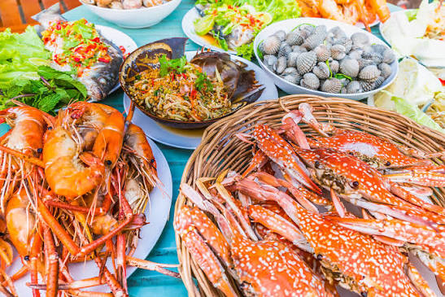
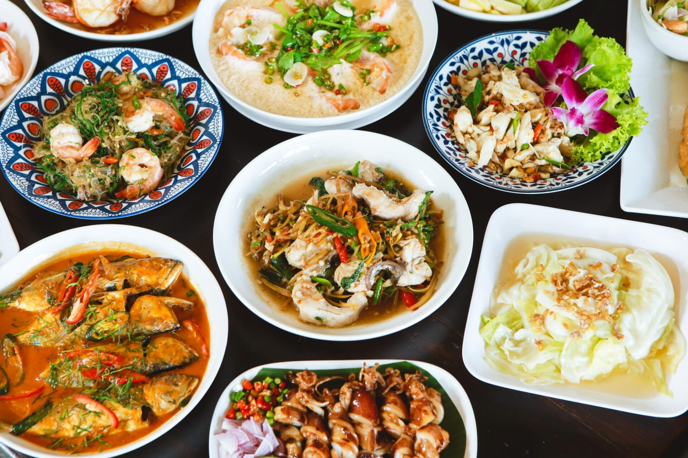

SEAFOOD
อาหารทะเลสด
ประจวบคีรีขันธ์มีอาหารทะเลสดใหม่ จากชุมชนชายฝั่ง ทั้งกุ้ง หอย ปู ปลา และปลาหมึก สามารถนำมาปรุงอาหารได้ หลายรูปแบบ เช่น กุ้งเผา ปูม้านึ่ง และปลาหมึกย่าง
สัมผัสรสชาติอาหารและเสน่ห์ของเมืองชายทะเล
จังหวัดประจวบคีรีขันธ์เป็นเมืองชายทะเลที่มีอาหาร หลากหลาย ทั้งอาหารทะเลสด อาหารพื้นบ้าน และอาหารจากตลาดท้องถิ่น ซึ่งสะท้อนเอกลักษณ์และวิถีชีวิตของคนในชุมชน

ประจวบคีรีขันธ์มีอาหารทะเลสดใหม่ จากชุมชนชายฝั่ง ทั้งกุ้ง หอย ปู ปลา และปลาหมึก สามารถนำมาปรุงอาหารได้ หลายรูปแบบ เช่น กุ้งเผา ปูม้านึ่ง และปลาหมึกย่าง

อาหารพื้นบ้านที่ใช้วัตถุดิบจากธรรมชาติ และผลิตผลในท้องถิ่น มีวิธีปรุงอาหาร ที่สืบทอดกันมา สะท้อนภูมิปัญญา และวัฒนธรรมของคนในชุมชน

ตลาดท้องถิ่นเป็นแหล่งรวมอาหารสด อาหารทะเล อาหารปรุงสำเร็จ ขนมพื้นบ้าน และสินค้าของชุมชน นักท่องเที่ยวสามารถเดินเลือกซื้ออาหาร และสัมผัสบรรยากาศวิถีชีวิตของคนในพื้นที่
เมื่อมาเยือนจังหวัดประจวบคีรีขันธ์ อย่าลืมลองชิมอาหารทะเล อาหารพื้นบ้าน และเดินเที่ยวตลาดท้องถิ่น เพื่อสัมผัสรสชาติและวัฒนธรรมของเมืองชายทะเล